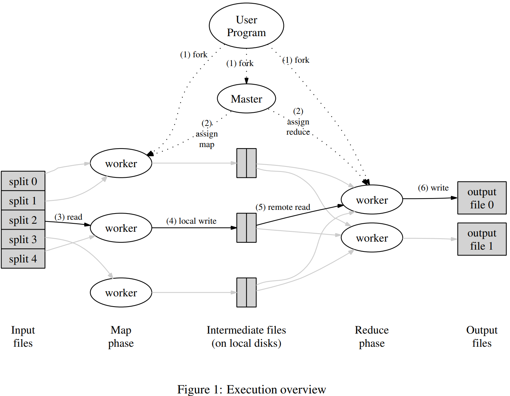
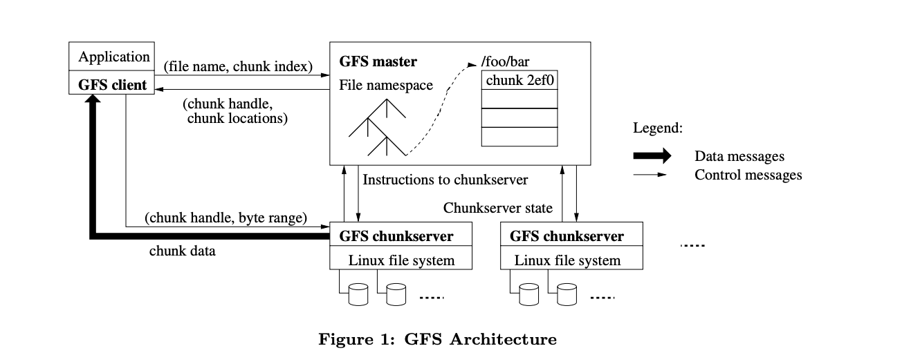
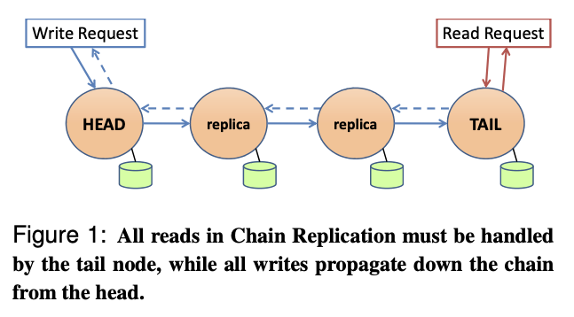
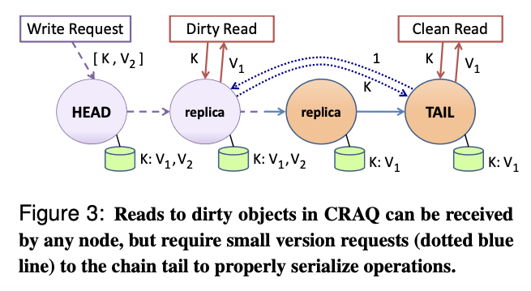
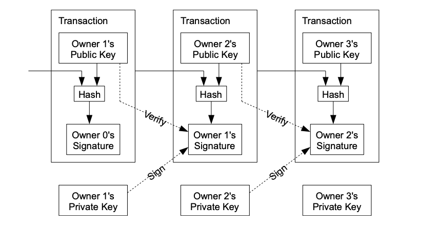
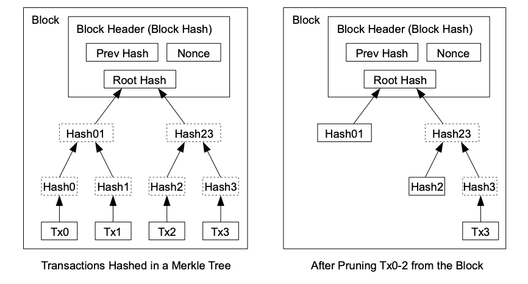

Paper 1: MapReduce
提出背景：本世纪初，根据存储技术发展趋势，存储能力的增速已经快于全互联网内容的增速，谷歌预判出将来一家巨型公司的数据库将有能力存储下整个互联网。基于此，谷歌提出对于海量数据的分布式处理框架。
本文发表于 2004 年，提出了严格的网络设备间吞吐量限制，并据此将架构设计为在存储设备上直接做计算（Map 等操作）。事实上谷歌已抛弃这种老式 MapReduce 方法（MapReduce 之死），且现在吞吐量已往往不再是瓶颈，存算分离架构已逐渐成为主流。
问题抽象
- map (k1, v1) → list(k2, v2)
- reduce (k2, list(v2)) → list(v2)
两个函数均为无副作用的函数式函数。
流程要点
- 将每个文件分成 64 MB 的块，每块保存 3 个副本在不同的机器上。尽量让存有数据的机器做对应的 Map 任务；
- 每个 map-worker 为每个 reduce-worker 生成一个文件，Map(key) 输出到 Hash(key) % R 的文件上；
- 由于 output file 可能是下一个 MapReduce 任务的 input file，因此不做合并；
- 容错：Master 定期 ping Worker，故障的 Worker 负责的任务会分到其它 Worker 上；若 Master 故障则直接报告用户；
- 原子性：依靠底层文件系统提供的原子重命名操作来保证最终文件系统状态仅包含 reduce 任务执行的一次数据；
- 解决长尾效应（水桶效应）：在 MapReduce 临近结束时，Master 会备份 in-process task 同时运行，原任务和备份任务有一个完成即可；

Paper 2: GFS
主从复制
- 用于解决并发操作造成的不一致问题，设置一主多从结构；
- Coordinator 通过记录版本号（每次更换 Primary 时递增）确保重启后能读到最新数据；
Client 读文件流程
将 filename 和 offset 发送给 Coordinator，后者存有 filename →chunkhandle 和 chunk handler → chunk server list 表；
Coordinator 根据偏移量返回 chunk handler 和对应 chunk server list；
Client 缓存 chunk handler 和 chunk server list，并猜测最近的 chunk server 发送请求；
chunk server 根据 offset 读取数据返回给 Client；

Client 写文件流程
- Client 向 Coordinator 指定文件块和 offset，Coordinator 返回 Primary 和 Secondary；
- 若对应 chunk 没有 Primary，Coordinator 负责与其中一个服务器签订租约；
- Client 向所有服务器发送数据（生成临时数据，但不真正写入，可以以任何拓扑顺序）；
- 收到所有服务器回复后，Client 要求 Primary 写入；
- Primary 检查租约是否过期，若没有则写入块文件；
- Primary 通知所有 Secondary 写入（将临时数据复制到块文件中）；
- Primary 等待所有 Secondary 回复，若超时则返回失败，Client 重新请求；
其它
- 快照（Snapshot）：使用写时复制（Copy-on-Write）；
- Checksum：使用 CRC32 做文件完整性校验；
- 每个 chunk 至少保有三个副本；
局限性
- 弱一致性（不同服务器存储内容很可能不同，不保证 get 能得到最近一次 put 后的结果）、单 Master（Coordinator）、没有明确对各种故障的相应处理、仅用于 Google 内部而不提供交互式；
- GFS 论文发表于 2003 年，与 MapReduce 一样，GFS 已被取代（新的 Colossus 框架），但其设计思想仍保留在包括 HDFS 的大部分存储系统中；
- 若写入失败，则本次 [old-offset, new-offset) 的部分失效（空间浪费），下一次写入请求会接着 new 继续 Append 而非在 old-offset 上重试；这要求数据之间的顺序没有影响；
Paper 3: Raft
Persistent or Volatile（课堂内容）
- 每个服务器都持久化的数据：currentTerm（防止投错周期），voteFor（防止投给两个候选者），log[]；
- 每个服务器的易失数据：commitIndex（已提交的最高日志索引，领导者会通知），lastApplied（已应用的最高日志索引，日志中有记录）；
- 领导者上的易失数据（选举后重新初始化）：nextIndex[]（记录每个节点下一个应该接收的日志索引），matchIndex[]（节点目前与 Leader 已匹配的最大日志索引）；
过半票决（Majority Vote）的性质
- 不可能同时票选出两个 Leader（Election Safety）；
- 不可能在同一个日志索引应用（写入状态机）不同的日志条目（State Machine Safety）；
- 任意两个过半子集必有交，故 new leader 可以通过交集获取 old leader 的版本信息；
- 发生网络分区（Network Partition）时，较大分区可能票选出新 Leader，而位于较小分区的旧 Leader 由于凑不齐半数回应，无法再 commit 新请求；
写流程
- Client 向 Leader 的应用层（数据库）发起请求；
- Leader 不立即执行，而是通过下层 Raft 库通知所有 Follower 将新操作（AppendEntries）加入日志中并更新任期号；Follower 会忽略所有低于自身当前任期号的请求；
- 收到超过半数节点（包括自己）完成 AppendEntries 并回应后执行操作并回应 Client；
- Leader 提交操作后再次通知 Follower，后者应用层执行相应操作；
选举流程
- 每个 Raft 节点持有一个 Election Timer，若耗尽之前仍未收到 Leader 心跳包，则认为 Leader 以下线并开始一次选举；
- 服务器增加任期号（Term Number），并成为 Candidate，向所有节点广播投票请求；
- 对于 Follower 来说，如果 Candidate 的日志任期号较高，或相同但日志条目更长，才会投票支持，从而保证新 Leader 的日志至少与过半节点的日志一样新，进而保证新 Leader 的状态包含所有旧 Leader 提交过的状态；
- 新 Leader 直接在下一次 AppendEntries 时标明新的任期号，其它 Candidate 接收到不小于自己的任期号后会放弃选举；
- Leader 不会删除或覆盖自己的日志而只会增加（Leader Append-Only），它的日志就是共识；新 Leader 会不断让 Follower 的日志回退直到与自己匹配；
- AppendEntries 中带有领导人任期号，但同一个日志操作不会被覆盖成新任期号，从而防止一个过半持有的日志不被提交（Raft 永远不会通过计算副本数目的方式去提交一个之前任期内的日志条目。只有领导人当前任期里的日志条目通过计算副本数目可以被提交，由于日志匹配特性，之前的日志条目也都会被间接的提交。见 5.4.2）；
正确性证明
- 特性 1：若一个日志的最大任期号大于另一个，以前者为准；
- 证明：Leader 日志是共识，后者会被先删除（若有必要）后新增，最终同步到与前者相同；
- 特性 2（Log Matching，见
5.3）：若两个日志同一索引任期号相同，则日志从头到该位置均相同；
- 任期号相同说明两个日志都以被新 Leader 同步至相同状态（即当时新 Leader 的状态），然后均被执行相同 Append 操作；AppendEntries 会指定日志索引，也会检查上一个日志是否正确，归纳即可；
- 特性 3（Leader Completeness，见
5.4）：若一个日志在某个任期号中被提交，则此条目必出现在更大任期号的领导人日志中；
- 被提交说明过半数节点已认可这次提交，新 Leader 必然也认可否则不能得到过半数赞同；反证（5.4.3）：由于必然存在既接受此提交的又投票给新 Leader 的节点，而新 Leader 又没有此次提交，说明新 Leader 并不比这个节点更新，因此不会被它投票，矛盾；
- 除此之外，领导人 U 的最后一条日志的任期号就必须比投票人大了。此外，他也比 T 大，因为投票人的最后一条日志的任期号至少和 T 一样大（他包含了来自任期 T 的已提交的日志）。创建了领导人 U 最后一条日志的之前领导人一定已经包含了那条被提交的日志（根据上述假设，领导人 U 是第一个不包含该日志条目的领导人）。所以，根据日志匹配特性，领导人 U 一定也包含那条被提交的日志，这里产生矛盾。（5.4.3）
日志快照
- Raft 可以要求应用程序记录到某个 log entry 为止的状态机快照，下次重启是从此处恢复；这样可以删除该索引之前的 log 以节省磁盘空间；
- 但是有这样的问题：若一个 Follower 只有前两个 log，而 Leader 已经删除了前三个 log，此时 Follower 已无从得知第三个 log 的内容；
- 为此引入继 AppendEntries 和 RequestVote 之后的第三个消息类型：InstallSnapshot RPC；当出现上述情况时，先回退到 Leader 还保存的最早的 log（此情形中是第三个），然后 Leader 将快照发给 Follower，然后再继续常规的 AppendEntries 同步；
- Follower 的日志中若存在与当前快照对应的 log 索引相同、任期号相同的记录，则其之前的可以全部删除，之后的可以依次应用并回复；若不存在，删除本地存储的所有 log；
局限性
- 极端情况：Leader 的所有出向网络均正常而入向网络损坏，将仍然发出心跳包组织票选新 Leader；
- 选举定时器：依靠 Election Timer 的随机性保证节点不会同时成为 Candidate 从而分割选票，但极端情况下每次节点都同时成为 Candidate；广播时间（broadcastTime） << 选举超时时间（electionTimeout） << 平均故障间隔时间（MTBF）；
- 新 Leader 与 Follower 同步 log 时，若发现差异，每次仅回退一条记录，效率较低；课程中给出的改进：Follower 在同步失败时返回三元组 <XTerm（冲突记录对应的任期号）, XIndex（任期号为 XTerm 的第一条 log 的索引, XLen（可能对应位置没有 log，此时 XLen 返回空白 log 槽位数>；
- Raft 的设计初衷是一个比 Paxos 更易懂的模型（understandable consensus algorithm）；BTW，Paxos 的发明人 Leslie Lamport 同样是 Lamport 面包店算法、Bakery 互斥算法和 LaTeX 的发明人；
- 不支持拜占庭容错（有恶意节点发送错误数据）；
- Morris 教授原话：Raft论文图 13 的规则 6 有相应的说明。我认为正常的响应是，Follower可以忽略明显旧的快照。其实我看不懂那条规则6。
Paper 4: Zookeeper
概述
- Zookeeper 伴随 NoSQL 崛起，成为 Hadoop 核心技术栈；etcd 则伴随 Kubernetes 崛起，成为云原生核心分布式协调服务；
- 线性一致性（Linearizability）：又称强一致性（Strong Consistency），表示所有操作都可以看成瞬时发生，且按顺序生效；每次读操作能读取到最新的写操作结果；
- 根据以下两个条件画箭头，若构成环，则说明这一系列请求记录得到的结果不是线性一致的：
- 如果一个操作在另一个操作开始前就结束了，那么这个操作必须在执行历史中出现在另一个操作前面；
- 执行历史中，读操作，必须在相应的key的写操作之后；
- etcd 有线性一致性，而 Zookeeper 允许 Client 直接向 Follower 发起询问从而提升性能，代价是放弃线性一致性（可能存在一个客户端发起的写请求结束后，另一个客户端会读到旧值）；
- Zookeeper 有以下两条保证，这使其仍然具备相当的可用性：
- Zookeeper 保证写请求是线性一致的（写请求仍必然经过 Leader）；
- 且对于同一个客户端的请求会严格按照顺序执行（FIFO）：每次读取会返回一个 log entry（称为 zxid），下一次读会要求至少读到 log entry 之后的状态；也就是说同一个客户端在写入一个值后读取，读到的不可能再是旧值（单个客户端视角线性一致）；
- Zookeeper 提供 Sync 操作：本质是一个写请求，在客户端发送读请求时可以要求副本，在看到上一个 Sync 请求之前不要返回我的读请求，这就保证读取到了至少不旧于 Sync 的数据；
- 可以使用一个本质为读操作的 exists(file) 来获取是否存在文件并保证之后的读文件均不旧于此条请求，但无法避免 exists 操作之后文件被删除重建；因此 Zookeeper 支持 exists 的同时增加 watch，使得服务器在 watch 之后若执行修改操作会通知客户端（服务器维护 watch 表单，表明哪些客户端在 watch 哪些文件）；
API
create(path, data, flags)：创建path的znode节点，保存data，返回新的znode的名字。flag用于指明znode类型，也可指明是否使用顺序标志；排他性：若文件已存在会返回失败；delete(path, version)：删除path的znode节点，并且版本号满足version（不一致直接返回失败）；exists(path, watch)：返回path的znode是否存在。watch可允许客户端在该节点上应用 watch；getData(path, watch)：获取path的znode的值，watch和exists()一样，除非znode不存在；setData(path, data, version)：向path下的znode写入data，节点版本需要匹配version；getChildren(path, watch)：返回path子节点的所有名字；sync(path)：操作开始时，等待所有的更新都发送到客户端所连接的服务器，path当前是被忽略的；
分布式锁服务
- 实现原子计数器（mini-transaction，最坏复杂度为 O(n^2)）：
1 | WHILE TRUE: |
- 简单互斥锁：上锁就是创建 znode，解锁就是删除；节点多时会造成羊群效应：过多客户端监听同一个 znode 导致网络阻塞；
1 | WHILE TRUE: |
- 可扩展锁：
1 | CREATE("f", data, sequential=TRUE, ephemeral=TRUE) |
- Morris 教授原话：
- 不得不说，我有点迷惑为什么Zookeeper论文要讨论锁。因为这里的锁并不像线程中的锁，在线程系统中，不存在线程随机的挂了然后下线。如果每个线程都正确使用了锁，你从线程锁中可以获得操作的原子性（Atomicity）。假如你获得了锁，并且执行了47个不同的读写操作，修改了一些变量，然后释放了锁。如果所有的线程都遵从这里的锁策略，没有人会看到一切奇怪的数据中间状态。这里的线程锁可以使得操作具备原子性。
- 而通过Zookeeper实现的锁就不太一样。如果持有锁的客户端挂了，它会释放锁，另一个客户端可以接着获得锁，所以它并不确保原子性。因为你在分布式系统中可能会有部分故障（Partial Failure），但是你在一个多线程代码中不会有部分故障。如果当前锁的持有者需要在锁释放前更新一系列被锁保护的数据，但是更新了一半就崩溃了，之后锁会被释放。然后你可以获得锁，然而当你查看数据的时候，只能看到垃圾数据，因为这些数据是只更新了一半的随机数据。所以，Zookeeper实现的锁，并没有提供类似于线程锁的原子性保证。
- 所以，读完了论文之后，我不禁陷入了沉思，为什么我们要用Zookeeper实现锁，为什么锁会是Zookeeper论文中的主要例子之一。
- 我认为，在一个分布式系统中，你可以这样使用Zookeeper实现的锁。每一个获得锁的客户端，需要做好准备清理之前锁持有者因为故障残留的数据。所以，当你获得锁时，你查看数据，你需要确认之前的客户端是否故障了，如果是的话，你该怎么修复数据。如果总是以确定的顺序来执行操作，假设前一个客户端崩溃了，你或许可以探测出前一个客户端是在操作序列中哪一步崩溃的。但是这里有点取巧，你需要好好设计一下。而对于线程锁，你就不需要考虑这些问题。
Paper 5: CRAQ
链复制（Chain Replication）
- 从 HEAD 写，TAIL 写完通知 HEAD 返回；从 TAIL 读；保证线性一致；发生故障时将故障节点移出链即可；但是链复制无法抵御网络分区和脑裂，因此它通常需要有一个容错的 Configuration Manager（CRAQ 使用 ZooKeeper），用于通告所有参与者链的信息；

链复制下的分摊查询 CRAQ
- CRAQ 可以做到从任意副本执行读请求，同时保留线性一致性；
- 每个节点保存多版本的对象，每个版本的对象包含一个版本号（单调递增）和一个标记（标识该版本是
clean还是dirty，初始为clean） - 当节点收到新版本的对象，将最新版本追加到该对象的列表中
- 若节点不是尾节点，则标记最新版本是
dirty，并传播给下一个节点 - 若节点是尾节点，则标记最新版本是
clean（此时该版本的写已经提交），并沿链反向传播ACK（包含版本号）给其它节点
- 若节点不是尾节点，则标记最新版本是
- 当节点收到尾节点的
ACK，将最新版本标记为clean，并可以删除旧版本的数据 - 当节点收到读请求
- 若最新版本是
clean，直接返回数据 - 若最新版本是
dirty，则- 先向尾节点询问最新已提交的版本
- 根据尾节点返回的版本，返回对应版本的数据（可以保证该版本肯定没有被删除）
- 若最新版本是

一致性
CRAQ 支持三种一致性模型：
- 强一致性：系统保证对一个对象的读写操作都以顺序执行，并且对于一个对象的读操作总是会观察到最新被写入的值；4.1 中描述的读操作可以使每次读取都读到最新写入的数据，因此提供了强一致性；
- 最终一致性：在系统中，对一个对象的写入仍是按顺序在所有节点上应用的，但对不同节点的最终一致性读取可能会在一段时间内（在写操作应用于所有节点之前）返回过时的数据（单Client 视角仍线性一致）；允许节点返回未提交的新数据，即允许 client 可从不同的节点读到不一致的对象版本；
- 带有最大不一致边界的最终一致性：允许节点返回未提交的新数据，但是有不一致性的限制，这个限制可以基于版本，也可以基于时间。如允许返回一段时间内新写入但未提交的数据；
Lecture 12 Distributed Transaction
此处为 Lecture 12 分布式事务的笔记。
数据库事务
- 四大要求（ACID）：原子性（All-or-Nothing）、一致性（正确性）、隔离性（与串行执行表现一致，即可序列化）、持久化；
- 并发事务控制的场景为不同服务器持有不同的数据，负责事务的不同子项，而不是 Raft 场景中的所有服务器存储数据相同；因此可用性低；
并发控制：两阶段锁：
- 第一阶段：事务开始前获取所有需要的锁；
- 第二阶段：事务结束前保持所有锁，即使某个值已用完也不释放其锁，从而保证隔离性；
- 悲观锁：常规锁，必须先获取锁再做操作；
- 乐观锁：无论是否有锁均先操作，操作完若发现有干扰则回退；
原子提交：两阶段提交（2PC，Two-Phase Commit）：
- 事务协调者 TC（Transaction Coordinator）接到客户端请求后，向每个服务器发送 Prepare 指令，每个服务器成功将指令操作持久化（但不提交）后返回 yes/no；
- TC 收到全 yes 后，向所有服务器发送 commit 指令；服务器提交后返回 ACK；
- TC 收到全 ACK 后，向客户端返回成功；
- 此过程中，只要有一个服务器 commit 了，整个事务必须全部 commit 而不可再 Abort，所有在此阶段下线的节点必须在重新上线后将此事务 commit；
- 所有 commit 和 Abort 指令必须由 TC 决定并发出，其余节点无权自行商讨决定是否 commit 或 Abort；这可能造成等待，因此 2PC 的性能和可用性都不高
Paper 6: Bitcoin
比特币：一种基于密码学的、点对点、采用分布式共识算法、完全不依赖第三方可信任机构的电子货币系统；
论文未提及
- 私钥签名技术：
- 每个用户拥有一个公钥（公开）与一个私钥（保密），二者一一对应；
- 签名方可以使用自己的私钥产生自己的签名 Encrpyt(Hash(originalMessage), privateKey) = signature；
- 接收方可以得到 Hash(originalMessage)、signature 和 publicKey，比较 Decrypt(signature, publicKey) 与 Hash(originalMessage) 是否一致即可；
- 局限性：
- 工作量证明对算力有巨量需求，导致后来的大量矿场灾难造成的资源浪费；目前已有更先进、不消耗大量资源的持有量证明（Proof of State，或权益证明）算法；
交易
我们将一枚电子货币定义为一条数字签名链。每个拥有者都通过将上一次交易和下一个拥有 者的公钥的哈希值的数字签名添加到此货币末尾的方式将这枚货币转移给下一个拥有者。收 款人可以通过验证数字签名来证实其为该链的所有者；仅这一个技术无法避免拥有者将一枚货币交易给两个接受者，因此需要工作量证明；

传统中心化电子支付系统防止双重支付的方式：每次交易先讲货币退回铸币厂，再有铸币厂直接向接收人发行一枚新货币。这种方式依赖中心机构铸币厂；
比特币系统公开全部交易，任何节点可以通过网络追溯出整个系统的交易历史，每次交易时，需要多数节点认同此交易是最先收到的证据；使用时间戳服务器，将每几个项目合在一起打上时间戳作为一个区块，每个时间戳哈希值都纳入了上一个时间戳，形成一条链；
工作量证明（Proof of Work）：搜索一个数使其与区块数据一起被（SHA-256）哈希后得到的值以数个 0 比特为开头；由于区块形成一个后面包含前面的链，若想篡改一个区块，必须重做此后所有区块，其成功概率服从泊松分布呈指数消减；
网络
- 新交易向所有节点广播，每个节点将其收集至区块并为它寻找工作量证明（因此比特币交易通常需要等待一定时间才能成功）；
- 当一个节点找到工作量证明，向所有节点广播这个区块；
- 若节点认可区块中所有交易且没有双重支付，接收此区块并在链中创建下一个区块；
- 节点总是认为最长的链是正确的；只要诚实节点够多，就几乎没有被攻击（伪造区块链）的可能，伪造者需要付出的算力将远高于所获收益；
- 为激励找到工作量证明的节点，下一个区块的第一笔交易为对此节点的奖励；由于方程的解是有限且随机的，可以作为货币资源被发放；或是由交易费充当；奖励将随时间递减以抑制通货膨胀；
- 将旧交易哈希进默克尔树以节省磁盘；
